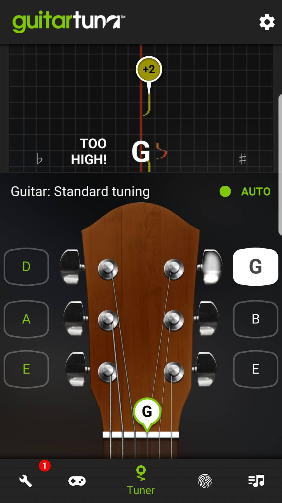
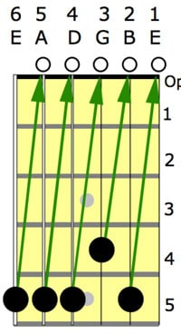

Podstawy gry na gitarze cz. 1
Strojenie gitary
Jak pewnie wiesz, standardowa gitara ma 6 strun. 3 z nich są basowe i 3 są wiolinowe a ich kolejność od najgrubszej do najcieńszej idzie następująco:
E A D G B E
Łatwo można zauważyć, że istnieją dwie struny E, jednak to nie są te same struny! Zapamiętaj dobrze ich kolejność! Ich znajomość będzie Ci później potrzebna przy pracy z stroikiem, aby nie pomylić dźwięków przy strojeniu wiosła.
Gitarę można stroić na wiele sposobów:
APLIKACJA
ELEKTRONICZNY STROIK
STROJENIE ZE SŁUCHU
Źródło: classicalguitarshed.com
Strojenie za pomocą aplikacji, bądź stroika elektronicznego jest relatywnie proste - wystarczy wiedzieć do jakiego dźwięku stroimy i wstrzelić się tak, aby być jak najbliżej zera (aplikacje) lub żeby wskaźnik był jak najbliżej środka (stroiki z zakresem). W przypadku strojenia ze słuchu jest dużo trudniej, ponieważ albo trzeba znać barwę danego dźwięku "na pamięć", albo kierować się schematem 5-5-5-4-5 (patrz powyżej). Schemat ten polega na tym, iż piąty próg grubszej struny powinien brzmieć TAK SAMO jak następna pusta struna, a więc wystarczy nam poprawnie nastrojona jedna struna i do niej dopasowywać resztę. Wyjątek stanowi struna G, gdzie dźwięk z następnej struny powinien znajdować się na 4 progu.
Zmiana strun w gitarze klasycznej / elektrycznej
Wbrew pozorem, wymiana strun nie jest tak straszliwa jak Ci się wydaje. Z tym poradnikiem, nawet dziecko z przedszkola sobie poradzi - oczywiście pod warunkiem, że będzie przestrzegało paru cennych wskazówek w tej części. Przede wszystkim, przed założeniem swojego pierwszego kompletu strun, warto wpierw poćwiczyć na starych strunach, parę razy je założyć i ściągnąć aby nabrać odpowiedniej wprawy, ponieważ źle założone struny mogą przede wszystkim wpłynąć na nieprawidłowe strojenie gitary lub na ciągłe wahania stroju.
Ważne kwestie dotyczące wymiany strun
1. Chcąc mieć, pełne i jednakowe brzmienie gitary, zakładaj zawsze cały komplet naraz, ponieważ wymiana strun sztuka po sztuce, gdy każda z innej parafii, może spowodować iż gitara będzie nierówno wybrzmiewała lub dźwięk w gitarze będzie po prostu wyraźnie pogorszony, ale nie marnuj pieniędzy na nowy komplet, kiedy tuż po zmianie pójdzie pojedyncza sztuka... o ile nie masz w zapasie struny o tej samej grubości!
2. Musisz znać różnicę między gitarą akustyczną, a klasyczną. Różnic jest niewiele choć musisz wiedzieć, że gitara akustyczna wykorzystuje struny metalowe, zaś klasyczna - nylonowe. Struny nylonowe mają to do siebie, że brzmią delikatniej i mniej metalicznie niż te drugie, jednak są bardziej podatne na rozstrojenia. Ponadto korpus gitary akustycznej jest często trochę większy niż gitary klasycznej. Podstrunnica w gitarze akustycznej jest węższa, ponieważ gitara ta, jest dostosowana do grania akordów. Gitary klasyczne mają szerszą podstrunnicę, na której łatwiej jest grać jednocześnie główną melodię i linię podkładu.
NIE MONTUJ METALOWYCH STRUN W GITARZE KLASYCZNEJ!!! Jeśli chcesz zniszczyć sobie gitarę klasyczną, dobrym pomysłem jest założenie na nią strun metalowych, ponieważ mają silniejszy naciąg i łatwo mogą zniszczyć gryf w gitarze klasycznej.
3. Decydując się na ściągnięcie całego kompletu strun pamiętaj o jednej zasadzie – struny ściągaj naprzemiennie. Celem jest aby gryf pozostał w symetrycznej pozycji. Zacznij najpierw od luzowania obu strun E (bas i wiolin), następnie A i B, a na środkowe D oraz G. W tej samej kolejności ściągaj struny z gitary. Montując struny i strojąc je, postępuj tak samo - najpierw zewnętrzne, a te bliżej środka.
4. Grubość strun ma znaczenie! Jeśli chcesz grać cięższe brzmienia lub obniżać strój gitary, zakładaj grubsze struny. Grube struny są z reguły silniej naprężone i dzięki temu możesz pozwolić sobie na obniżenie stroju nawet o kilka progów w dół, a struny nie będę latały jak flaki przy każdym uderzeniu.
Typowe grubości strun - od najcieńszych do najgrubszych
Dla tych, którzy nie wiedzą o co chodzi z powyższą tabelką - podane są tutaj nominalne grubości, które są mierzone w tysięcznych częściach cala. Dla przykładu: struna .12 posiada grubość równą 0.012 cala. Warto wiedzieć, że wybierając komplet strun, podaje się grubość tej najcieńszej. Kiedy idziesz do muzycznego i mówisz: "Poproszę struny dwunastki!", wszyscy w sklepie od razu wiedzą, że będziesz grał ciężki metal.
Jak je wymienić.....?
1. Istotna jest ilość zwojów (owinięć kołka przez strunę). Normatywnie dla strun basowych powinno się nawinąć ok. 2 zwoje, zaś dla wiolinowych około 4. Niewystarczająca ilość zwojów, może w przyszłości skutkować problemami z trzymaniem stroju przez gitarę.
2. Po wstępnym nastrojeniu gitary zawsze każdą ze strun ręcznie naciągaj (z wyczuciem!) aby się dobrze ułożyła na kluczach oraz mostku. Zrób tak kilka razy, a możesz uniknąć potem nagłego rozstrojenia gitary po ewentualnych podciągnięciach strun.
3. Nawijając strunę, utrzymuj ją w stałym napięciu aby prawidłowo ułożyła się na kołeczku. Obserwuj w międzyczasie czy struna leży na siodełku! Jest to element łączący główkę i gryf gitary.
4. Aby ułatwić sobie nawijanie strun warto zaopatrzyć się w specjalną korbkę, dzięki której zdecydowanie szybciej wymienisz struny i nie zmęczysz się.... aż tak.
Podstawy gry na gitarze cz. 2
Jak trzymać kostkę do gitary i jaką dobrać?
Zdecydowanie najważniejsze zagadnienie dla początkujących shrederów. Możesz spotkać się z wieloma sposobami trzymania kostki do gitary i bardzo ciężko wskazać “ten właściwy”. Oto najczęściej stosowany przez nauczycieli gitary schemat:

Kostka powinna leżeć między palcem wskazującym, a kciukiem (prostopadle do niego). Trzymając kostkę, palec wskazujący powinien być zgięty w dwóch miejsach pod kątem 90-110 stopni.
Wybór kostki pozostaje kwestią indywidualną, a co za tym idzie - wiele zależy od stylu gry. Niektórzy preferują twarde metalowe kostki, inni zaś - giętkie plastikowe i radzą sobie nie gorzej niż Ci pierwsi. Najlepiej spróbować każdą kostką i dopiero po czasie stwierdzić, którą gra się nam najlepiej. Ukłon w stronę Brian'a May'a, gitarzysty legendarnego zespołu Queen, który grywał na koncertach monetą!
Prawidłowa praca lewej ręki
Tutaj najważniejsze jest ułożenie i praca palców. Palce lewej ręki powinny z wyczuciem dotykać blisko końcówki progu i tak, aby nie zahaczać innych strun, dlatego palce nie powinny "leżeć" wszerz gryfu (chyba że grasz akordy barowe, ale do tego dojdziesz w swoim czasie), a stać niezależnie - każdy na swojej strunie i swoim progu. Będzie to niezbędne podczas grania akordów z pustymi strunami. Pamiętaj o rozluźnieniu palców, nie mogą one się usztywniać. Staraj się też jak najmniej biegać po gryfie i w razie większych interwałów (odległości dźwięków) przechodzić na inne struny. Na początku przygody z gitarą będzie Ci ciężko to utrzymać, ale głowa do góry! Nie zniechęcaj się i regularnie ćwicz , a z czasem palce będą się same poprawnie układały do grania.
Nie trać czasu i przejdź do sekcji ĆWICZENIA! :)